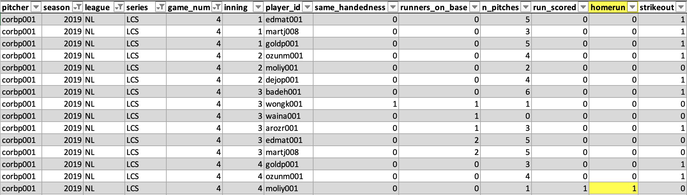

Introduction
Recently, starting pitchers in baseball have been pulled at earlier points in the game, especially in high leverage moments. This trend is particularly noticeable in the postseason, where managers are tempted to pull their starters in favor of a reliever to get out of a defensive jam. In this post I will use survival analysis to study the timing of starting pitcher replacements in the postseason. I will also introduce the concepts of censoring and survival curves as they relate to starting pitcher replacements. Ultimately, I aim to build upon this post and develop a statistical model for predicting starting pitcher replacements.
Survival Analysis: A brief overview
The goal of survival analysis is to understand the factors that lead to earlier (or later) event times. In a medical context, the event is often mortality (i.e., death of the patient). In this sense, medical researchers are typically most-concerned with the factors that lead to earlier mortality, or longer survival, hence the name ‘survival’ analysis.
Survival analysis is particularly useful when studying time-related phenomena with many possible risk factors, and when observational data are available. In professional sports, risk factors might be understood as game situations, i.e., what situations lead to a higher chance of the outcome? Data availability is usually not an issue, since events are now tracked to the play-level, and sometimes even greater levels of granularity.
There aren’t many examples of survival analysis applied to baseball, though one example studied how the length of player careers varied based upon the handedness of the player.1 In that analysis, the event of interest was the end of the player’s career; the unit of time was days. This analysis could help answer questions like, which throwing handedness tends to yield longer careers in the major leagues? (Spoiler: the author found, on average, right-handed throwers teneded to last a little longer than lefties).
Survival analysis includes a lot of the same features of linear regression. Linear regression is at the foundation of statistical learning. It is used in advanced baseball metrics to adjust for factors like league-to-leage variability or positional differences.2 Importantly, survival analysis extends that framework to study events that are time-dependent, like the length of a player’s career. Studying career lengths with linear regression would be prone to certain kinds of bias, since career lengths are not normally-distributed.3
In the next section I will describe the data that were prepared to analyze starting pitcher replacements in the postseason.
Data: Play-by-play from Retrosheet
For this analysis, I used play-by-play data from Retrosheet4 to construct a set of starting pitcher histories in the postseason. This required parsing the play-by-play events to identify game situations, such as the number of runners on base. It also required processing roster information to identify the handedness of the pitchers and batters they faced. In fact this data cleaning process was intensive, since the play-by-play data are minimally-structured and contain only enough information to re-create the context of a particular game after applying a considerable amount of processing. Documentation for the play-by-play files is available5 and was extremely helpful in this stage of the analysis.
I chose to focus on the twenty postseasons between 2000 and 2019. This was for a few reasons. First, the more-recent postseasons since 2019 have been impacted by COVID-19 and major league rule changes, such as the pitch clock. I wanted to ensure my analysis was not complicated by any of those effects. Secondly, the postseasons before 2000 are now so long ago that strategies around managing a starting pitcher are substantially different. Thus, I focus on 2000-2019 as a relatively stable, modern era of postseason play. Within this window there were 611 postseason games available to analyze.
Here’s what every postseason game log contains, after data processing was performed:
- League (e.g., NL/AL/World Series)
- Playoff round
- Playoff game number
- The starting pitcher for each team
- A record of all plate appearances facing each starter, and outcomes (e.g., home-run, fly out)
- A running tally of the number of pitches thrown by each starter
- A running tally of the number of strikeouts achieved by each starter
- The handedness of the pitcher and batter
The above list is incomplete since it does not contain crucial variables like the matchup history between a given batter and pitcher. However, I felt that the list was sufficient for beginning an inquiry into starting pitchers and the factors that affect their replacement. In the next few sections, I will define the key variables of interest for the analysis.

Defining the Event of Interest
In the playoffs, the time of replacing the starting pitcher is one of the most crucial decisons faced by managers. Here is what sportswriter Jasyon Stark wrote about “hooks” in the wake of a catastrophic collapse of the Red Sox’s pitching in game seven of the 2003 ALCS:
For managers and the pitchers they manage, this is the question: Take him out, or leave him in? It is the question that hangs over every manager every game of every season. It is the question that leaves canyons under their eyes and fault lines in their forehead.6
Red Sox manager Grady Little had just been fired after the team ended their season on a blown lead against the Yankees. Little’s decision to leave Pedro Martinez on the mound in the eighth inning was the turning point that contributed to their loss.
In the modern era, complete games are increasingly rare. In the dataset described in the previous section, of the 1218 starts analyzed, only 33 (2.7%) resulted in complete games. Thus managers are usually grappling with when to pull the starter, not if they should pull the starter. Of course, in the heat of the moment of a playoff game, this decision can resemble the form of a binary choice for each batter faced. In that sense, it’s like flipping a coin at the beginning of each plate appearance. The manager keeps flipping the coin (with a low probabilitiy of tails), and it continues to show heads. However flip the coin enough times and eventually it shows tails. When this happens, the starter gets pulled.
I’m not suggesting that managers are actually flipping coins to guide them through highly consequential decisions, but to an outside observer, the process of starting pitcher replacements can be thought of as a random process. In this analysis, I will define the random process as the replacement of the starter, and I will model the timing of that event using information available throughout the game, including the in-game performance of the pitcher and the opposing team’s offense. Next I will define the unit of time used to measure how late into the game a starter will play.
Defining the Unit of Time
In most survival analyses, the unit of time is apparent from the context. For example, in a study of biomedical treatments for cancer, it would make sense to measure time in years, since patients would be expected to survive for multiple years after receiving treatment. In the previously mentioned analysis of players’ career lengths, time was measured in days. Whether days or years are used doesn’t really matter. The point is that time was measured with clock time.
Contrast this with starting pitcher performances, where it doesn’t make sense to measure time in minutes or hours, because baseball is not a sport with a running clock. What is the appropriate choice for a unit of time in measuring how long a starter lasts? Innings pitched? Batters faced? Pitches thrown? The answer is not so obvious, and the choice time units requires some careful thinking.
Consider that most starting pitchers are evaluated on innings pitched. You’d like to see a workhorse starter throw for more innings, on average. But in baseball, there is no uniform length of an inning. In fact, two innings may last very different lengths of time, determined by relative offensive and defensive performance. For that reason, innings pitched is not the most appropriate unit of time for this analysis.
Instead of innings pitched, the number of batters faced is a relevant proxy for time. Pitchers may throw different numbers of pitches, but you can generally expect a pitcher to throw about 3.8 pitches per batter faced in the long run. Additionally, pitchers are often replaced before facing a new batter, not mid-way through an at-bat.7 Lastly, the number of batters faced can easily be converted to times through the order (TTO); simply divide the number of batters by nine. Thus the number of batters faced is a sensible choice for the unit of time.
The following plot shows the distribution of the number of total batters faced (TBF) for all of the playoff starters in the dataset. The small number of complete games is illustrated by the tightly-grouped cluster at the right end of the distribution. Overall, starters tended to face between 20 and 30 batters, and rarely faced more than 35 batters. However, there was a substantial amount of starters that were pulled early, i.e., between 10 and 20 batters faced.
Censoring: Handling complete games
When using survival analysis methods, one has to consider the possibility that the event does not occur within the observation window. In medical contexts, this might be good news for the patient; fewer events mean fewer deaths. In this analysis, the replacement of a starting pitcher in the postseason is extremely common. The small number of complete games means we could probably ignore them altogether without much of an effect on the results.
However, what if we wanted to include complete games in our analysis anyways? The methods of survival analysis are well-equipped to handle these observations. In the context of this analysis, complete games are considered censored observations, because the game ended before the starting pitcher was replaced. Survival analysis will not ignore the censored observations, it turns out, and instead each model will use data from complete games to inform an understanding of what makes a starter more likely to get pulled.
I should mention, the implicit assumption of censoring is that the event would have occurred if we were to continue observing the phenomenon into perpetuity. In baseball, this assumption is somewhat questionable since complete games imply that the starter was not replaced. But imagine if the opposing team were to tie the game and send it into extra innings. Eventually, it would become more likely that the starter would be replaced, even if he is pitching very well, because of fatigue and injury risk.
Kaplan-Meier Method for Replacing Starters
The Kaplan-Meier procedure8 helps to estimate the speed of a ‘survival’ process, like the process of replacing starting pitchers described earlier in this post. The Kaplan-Meier method is usually illustrated with one or more ‘curves’. The curves in this case are functions that represent estimated probabilities of survival at various stages in the process. The higher the estimated probability, the more likely one is to survive until that particular point in time.
Before jumping to the Kaplan-Meier curves for this dataset, it’s worth considering which variable to stratify; there are a number of choices including league, series, and pitcher handedness. The point of stratification is to examine whether survival patterns vary between different strata of the overall dataset. In the figure below I stratified by season, but grouped seasons into five-year eras starting with 2000-2004. Therefore there are a total of four strata: 2000-04, 2005-09, 2010-14, and 2015-19.
The following plot shows the Kaplan-Meier curves for the probability of replacing a starting pitcher in the postseason, stratified by season era. The curves are plotted against the number of batters faced, which is the unit of time that was chosen earlier. The curves begin at zero on the \(x\)-axis, because it is impossible for a starter to be replaced before the first batter. The curves end at about 40, because that was the highest number of total batters faced in any postseason game during this period.
The most obvious pattern in the above picture is that the purple curve, representing 2015-2019, is shifted to the left of the other three curves. This era is the latest in the dataset, and the shifted curve suggests that starters tended to be replaced earlier in the game during the last five seasons. Another cue is taken from the point where the curves cross a probability of 50% (when the \(y\)-axis reads 0.5); this is the estimated median survival time. For the season eras between 2000 and 2014, the median number of batters faced was 26. For the 2015-19, however, the median TBF was 23. That suggests pitchers were pulled about three batters earlier in the game during the latter era, compared with the earlier era.
Is a difference of three batters meaningful? I’d argue yes, since a lot can happen in in just one or two plate appearances, particularly in high-leverage moments with the game on the line. But another important question is whether the difference is statistically significant. The Kaplan-Meier method answers that question, too. I applied the log-rank test which assesses whether there is a difference between the four curves. The \(p\)-value of the test was very small (< 0.001), meaning the difference is statistically significant.
Although this preliminary analysis suggests that starting pitchers did not last as long during the 2015-19 era as they did in previous eras, there are additional factors that we might consider relevant. For example, did something else change in the style of play that made managers more likely to pull their starters early? In a future post I will address the possibility of confounding factors using a statistical method called Cox Proportional Hazards regression.
Footnotes
Micah Melling. “Survival Analysis: How Long Do Careers Last?.” Baseball Data Science. https://www.baseballdatascience.com/survival-analysis-how-long-do-careers-last/↩︎
Piper Slowinski. “What is WAR?”. FanGraphs. https://library.fangraphs.com/misc/war/↩︎
Wikipedia. Normal Distribution. https://en.wikipedia.org/wiki/Normal_distribution↩︎
Retrosheet. Play-by-Play Data Files: Post-Season Event Files. https://www.retrosheet.org/game.htm#Post-Season%20Games↩︎
Retrosheet. The Event File. https://www.retrosheet.org/eventfile.htm↩︎
Jayson Stark. “The book on hooks.” ESPN.com: Baseball. https://www.espn.com/mlb/columns/story?columnist=stark_jayson&id=1798057↩︎
Alden Woods. “Girardi makes pitching change mid-at-bat.” MLB.com. https://www.mlb.com/news/joe-girardi-makes-pitching-change-mid-at-bat/c-141252666↩︎
E.L. Kaplan & Paul Meier. “Nonparametric Estimation from Incomplete Observations.” Journal of the American Statistical Association. https://doi.org/10.1080/01621459.1958.10501452↩︎